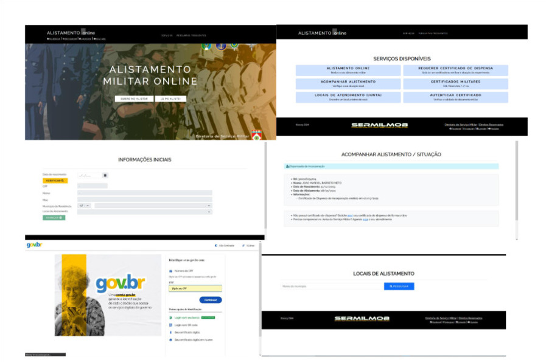
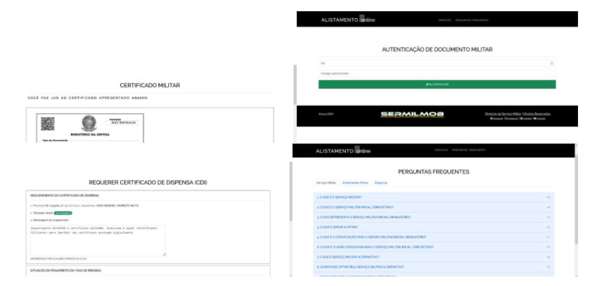
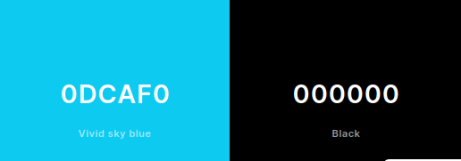

Guia de Estilo
Conceitualmente, um guia de estilo é, em essência, um documento que agrega os princípios e as diretrizes adotadas em um projeto, no qual são registradas as principais decisões de design tomadas, a fim de que elas fiquem organizadas e sejam incorporadas no produto final de forma efetiva. Portanto, o guia de estilo auxilia na implementação do produto final e funciona como uma ferramenta de comunicação entre os membros da equipe de design e também com a equipe de desenvolvimento. Este documento, em especial, se refere ao site do Alistamento Militar, o qual é o foco do projeto desenvolvido pelo grupo 05 de Interação Humano-Computador.
1. Introdução
1.1. Objetivo
Este documento visa apresentar o guia de estilo do projeto do site do Alistamento Militar, fundamentando-se nas Metas de Usabilidade consoante o ciclo de vida para engenharia de usabilidade de Mayhew [1], tal como foi abordado no Processo de Design.
Serão analisados os seguintes elementos, no intuito de documentá-los e, a partir do entendimento, propor melhorias e, futuramente, dar prosseguimento ao projeto nas etapas de design, avaliação e desenvolvimento:
- Elementos de interface: Design de telas, visualização de informações, disposição espacial e grid (layout), elementos de interface (widgets), janelas, tipografia, símbolos, logo e cores;
- Elementos de interação: Estilos de interação, seleção de um estilo e aceleradores (teclas de atalho);
- Elementos de ação: Preenchimento de campos, seleção e ativação;
1.2. Organização e Conteúdo
O guia de estilo irá abordar os aspectos levantados no tópico 1.1, seguindo a estrutura proposta por Mayhew.
- Introdução
- 1.1. Objetivo do guia de estilo
- 1.2. Organização e conteúdo do guia de estilo
- 1.3. Público-alvo do guia de estilos
- 1.4. Como utilizar o guia?
- 1.5. Como manter o guia?
- Resultados de análise
- 2.1. Descrição do ambiente de trabalho do usuário
- Elementos de interface
- 3.1. Disposição espacial e grid
- 3.2. Tipografia
- 3.3. Símbolos não tipográficos
- 3.4. Cores
- Elementos de interação
- 4.1. Estilos de interação
- Elementos de ação
- 5.1. Preenchimento de campos
- 5.2. Seleção
- Vocabulário e padrões
- 6.1. Terminologia
- 6.2. Tipos de tela (para tarefas comuns)
1.3. Público-alvo
O público-alvo é constituído pelos membros do grupo 5 de Interação Humano-Computador, incumbidos da análise do site do Alistamento Militar, visando auxiliar no desenvolvimento posterior de etapas do projeto. Ademais, há também outros alunos da disciplina de IHC, desse semestre (2023.1) e de posteriores, que poderão se interessar pelo nosso projeto.
1.4. Como utilizar o guia?
O guia deve ser utilizado de maneira que atenda às necessidades do público-alvo em relação ao projeto da disciplina. Assim, ele pode ser recorrido para decisões e propostas de design relacionadas ao projeto, quer sejam de produção ou manutenção.
1.5. Como manter o guia?
O guia deve ser atualizado sempre que, por parte da equipe de design, uma decisão vier a modificar o projeto. Deste modo, o projeto e seus documentos estarão numa mesma padronização.
2. Resultados de análise
2.1. Descrição do ambiente de trabalho do usuário
Os usuários utilizam o site do Alistamento Militar através de um navegador web, em um computador pessoal ou dispositivo móvel.
3. Elementos de interface
3.1. Disposição espacial e grid
A tela do site do Alistamento Militar é responsiva (i.e., se adapta ao tamanho da tela do dispositivo utilizado) e composta basicamente por 3 seções:
- Superior (header): contém o título do site ("Alistamento online"), e um menu com dois itens (Serviços, Perguntas Frequentes).
- Central: varia de página para página. Nessa, em específico, há os botões com os diversos serviços disponíveis na plataforma.
- Inferior (footer): contém a logo da mantenedora do site (Serviço Eletrônico de Recrutamento Militar e Mobilização) e links úteis (Diretoria de Serviço Militar, Direitos Reservados, Redes Sociais, etc).
A Figura 1 mostra a página de Serviços do site, acessada através de um computador pessoal.

Figura 1: Página de Serviços do Alistamento Militar (Fonte: MARTINS, Bruno; 2023).
3.2. Janelas
As janelas apresentadas na plataforma são:


3.3. Tipografia
O site utiliza somente uma única fonte textual para todas as páginas: Raleway sans-serif. A Figura 2 ilustra um exemplo de um texto escrito nesta fonte:
Figura 3: Exemplo de texto utilizando a fonte Raleway sans-serif. (Fonte: MARTINS, Bruno; 2023).
3.3. Símbolos não-tipográficos (ícones)
A Tabela 1 apresenta os ícones utilizados no site do Alistamento Militar, bem como suas respectivas descrições.
| Ícone | Descrição |
|---|---|
| Facebook: Link para o página de Facebook do site. | |
| Instagram: Link para o página de Instagram do site. | |
 |
Linkedin: Link para o página de Linkedin do site. |
 |
Youtube: Link para o canal do Youtube do site. |
 |
Subir para o topo da página. |
Tabela 1: Principais ícones utilizados no site. (Fonte: MARTINS, Bruno; 2023).
3.4. Cores
As duas únicas cores utilizadas são as seguintes (Figura 3):
- Preto (#000000): para textos, header e footer.
- Azul (#0DCAF0): para botões e links.

Figura 4: Paleta de cores utilizada no site. (Fonte: MARTINS, Bruno; 2023).
4. Elementos de interação
4.1. Estilos de interação
O estilo de interação predominante no site do Alistamento Militar é o comando direto, pois o usuário interage diretamente com os elementos da interface, sem a necessidade de intermediários.
4.2. Seleção de estilo
A escolha do estilo no site do Alistamento é bem simples, com botões para cada funcionalidade disponibilizados sem muitos comentários.
4.3. Teclas de atalho
O site do alistamento não possui teclas de atalho para melhorar a agilidade no acesso às páginas.
5. Elementos de ação
5.1. Preenchimento de campos
Apresentar um texto de descrição do campo, indicando o que deve ser inserido nele, é uma boa prática de usabilidade. Os campos devem ser preenchidos de acordo com o tipo de dado que se espera receber. Por exemplo, o campo "CPF" deve receber apenas números, e o campo "Nome" deve receber apenas letras. Além disso, os campos devem ser preenchidos de acordo com o padrão de escrita da língua portuguesa, ou seja, com a primeira letra de cada palavra em maiúsculo, e as demais em minúsculo. É importante especificar se o campo é obrigatório ou não. Caso seja, deve-se indicar isso ao usuário, seja através de um asterisco (*) ao lado do nome do campo, ou através de um texto indicando que o campo é obrigatório.
5.2. Seleção e ativação de itens
A seleção de um item deve ser feita através de um clique no item desejado. O item selecionado deve ser destacado, para que o usuário saiba qual item está selecionado. Além disso, deve-se indicar ao usuário que ele pode selecionar apenas um item, ou mais de um item. Por exemplo, se o usuário pode selecionar apenas um item, deve-se utilizar um botão de rádio. Se o usuário pode selecionar mais de um item, deve-se utilizar uma caixa de seleção.
5.3. Sequência de diálogos
As sequências de diálogo seguem um padrão, exceto na página de realizar o alistamento, onde os diálogos se dão or pop-ups, diferente das outras páginas. Os botões de confirmação e cancelamento seguem um padrão.
6. Vocabulário e padrões
6.1. Terminologia
A terminologia utilizada no site deve ser simples e de fácil compreensão. Deve-se evitar o uso de termos técnicos, e, caso seja necessário, deve-se explicar o significado do termo. Além disso, deve-se utilizar a mesma terminologia em todo o site, para que o usuário não se confunda. Por exemplo, se o site utiliza o termo Refratário, deve esclarecê-lo aos usuários sobre o seu significado - "O brasileiro que não se apresentar para a seleção durante a época de seleção do contingente de sua classe ou que, tendo-o feito, se ausentar sem a ter completado, será considerado refratário."
6.2. Tipos de tela (para tarefas comuns)
As telas devem ser construídas consoante os padrões especificados nos Elementos de interface de disposição espacial e grid.
Bibliografia
BARBOSA, Simone; DINIZ, Bruno. Interação Humano-Computador. Editora Elsevier, Rio de Janeiro, 2010.
Histórico de versão
| Versão | Data | Descrição | Autor(es) | Revisor(es) |
|---|---|---|---|---|
1.0 |
15/05/2023 | Criação inicial do guia de estilo | Bruno Martins | Arthur Augusto |
1.1 |
15/05/2023 | Adicionando legenda à tabela de ícones | Bruno Martins | Gabriel Souza e Arthur Augusto |
1.2 |
18/06/2023 | Adicionando autor às legenda e adicionando Janelas, teclas de atalho e diálogos | João Barreto | Gabriel Souza |